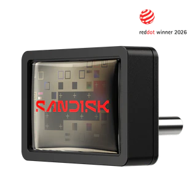

Webpage Enhancements
The Product Carousel
I initially thought of adding a product carousel to the home page, where the explore products link is. It is a very common technique in modern websites. I thought this would enhance the home page by showing a teaser of the produts Sandish offers. I have included the implementation below for reference, you can horizontally scroll to browse products. I ended up not including it in the final product because the carousel CSS styling is not fully implemented in Firefox. In Chrome based browsers you can render pagination dots to show how far you are in the carousel and next/previous buttons but because Firefox has not yet implemented those features, and Firefox support was a strict requirement, I removed it from the page. Carousels are usually made with JS, so maybe in later assignments I can bring this idea back. I learnt how to do this from the Mozilla Development Network (MDN) carousel tutorial page.
My Attempt at a JS-less Carousel
-
PokeDrive

- Fun collectible pocket monster design.
- Protective outer shell.
- Great novelty gift for fans.
-
Encrypt-A-Drive

- Advanced hardware-based data encryption.
- Massive multi-terabyte storage room.
- Secure password or biometric access.
-
The Classic

- Plug it into any standard USB-A port.
- Transfer files instantly with no setup required.
- Store your data safely in durable casing.
Expanded Product Details
To replace the carousel idea, I next thought about a modal box (popover) that pops up to show expanded detail on the product you are interested in. This makes the page less cluttered so the user can focus on the product itself and the key points, and only read about what they are interested in. All code is adapted from the MDN popover API page. I modified the standard styling to fit the Sandish site, with an appropriately styled close button, corner rounding on the popover, and dimming the background contents whilst the popover is open to improve legibility. You can find the implementation here.
Reactive Contact Form
I got the idea of a reactive form from online shopping, but I cannot recall which exact site sparked my interest. I came across this attribute ":user-invalid" scouring the MDN which made this possible. This way, I can show or hide an error message depending on if a user-created error was detected. I have used tailwind in the past to style reactive websites that turn into a mobile layout when the screen is small enough, and I wanted to try to mimic this by making the form turn into 2 columns when the screen is detected as landscape to better fill the space. From googling, Gemini gave me the idea of using @media to detect the orientation to landscape.